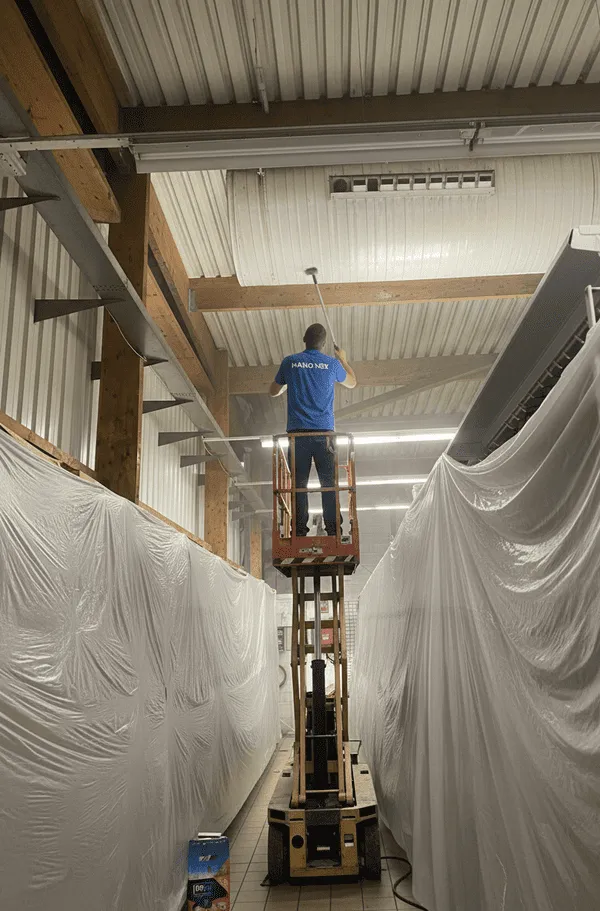

Fuenlabrada destaca por su potente tejido industrial —es uno de los mayores polígonos del sur de Madrid— combinado con barrios residenciales como Loranca, El Naranjo o La Serna. Esta dualidad define nuestro trabajo de limpieza de incendios en Fuenlabrada: atendemos tanto pisos familiares como naves, almacenes y talleres.
En el ámbito industrial, los incendios suelen implicar materiales plásticos, mercancía y maquinaria, lo que genera un hollín muy graso y tóxico. La descontaminación debe ser exhaustiva antes de reanudar la actividad, y para eso contamos con equipos de aspiración industrial y EPIs adecuados.

Por qué la limpieza tras un incendio en Fuenlabrada es urgente
El hollín no es solo suciedad: es un residuo graso y ácido que, con el paso de los días, corroe metales, amarillea plásticos y se incrusta en superficies porosas. Cuanto antes se actúe, más enseres se recuperan y menor es el coste final. Por eso en Fuenlabrada nos desplazamos en menos de 24 horas para valorar los daños y frenar su avance.
- Eliminación de hollín en paredes, techos y mobiliario
- Neutralización del olor a humo con ozono (no lo enmascaramos)
- Limpieza técnica de cocinas, campanas y conductos
- Vaciado, desescombro y gestión de residuos del siniestro
- Informe técnico con fotografías para tu aseguradora
Particularidades de Fuenlabrada
El polígono industrial de Fuenlabrada (Cobo Calleja y aledaños) concentra almacenes y naves de gran superficie donde un incendio puede afectar a miles de metros cuadrados y a stock muy diverso. En estos casos planificamos la limpieza por fases para que la empresa retome la actividad cuanto antes, retirando primero residuos y descontaminando después estructuras y maquinaria. En el lado residencial, Loranca —un barrio de urbanizaciones modernas con mucha vivienda en altura— presenta siniestros domésticos donde priorizamos cocinas, salones y la eliminación del olor en dormitorios. La cercanía de la Universidad Rey Juan Carlos también nos lleva a intervenir en pisos de estudiantes y locales.
Cómo trabajamos: nuestro proceso paso a paso
- Valoración en 24 h. Visitamos Fuenlabrada, evaluamos el alcance del hollín y damos un presupuesto cerrado.
- Protección y ventilación. Aislamos zonas no afectadas y ventilamos de forma controlada para evitar que el humo siga extendiéndose.
- Retirada de residuos. Vaciamos y desescombramos lo no recuperable y gestionamos los residuos.
- Limpieza técnica del hollín. Aplicamos aspiración HEPA y esponjas químicas en seco antes de la limpieza húmeda, según el material.
- Desodorización con ozono. Eliminamos el olor a humo de raíz en estancias, armarios y textiles.
- Informe para el seguro. Entregamos documentación fotográfica de todo el trabajo.
Precios orientativos de limpieza post incendio en Fuenlabrada
| Tipo de intervención | Plazo estimado | Precio orientativo |
|---|---|---|
| Habitación / estancia afectada | 1 día | desde 350 € |
| Vivienda media (70-90 m²) | 2-3 días | 900 € - 2.500 € |
| Vivienda grande / chalet | 3-5 días | 2.500 € - 6.000 € |
| Local, cocina o nave | según superficie | presupuesto a medida |
*Precios orientativos. El presupuesto final depende de la superficie, el nivel de hollín y los materiales. La valoración es gratuita.
Qué incluye y qué no
Sí hacemos:
- Limpieza y descontaminación de hollín, humo y olores
- Tratamiento de mobiliario, textiles y enseres recuperables
- Limpieza de zonas comunes afectadas
No hacemos: obras, reformas, pintura ni restauración estructural. Nos centramos exclusivamente en la limpieza y descontaminación, que es donde somos especialistas.
La gente también pregunta sobre la limpieza de incendios en Fuenlabrada
Tengo una nave en el polígono con stock quemado, ¿cómo trabajáis?
Planificamos por fases: primero retirada de residuos y mercancía afectada, después descontaminación de estructura y maquinaria, para que reanudes la actividad lo antes posible.
El hollín industrial es muy graso, ¿se quita de la maquinaria?
Sí. Usamos desengrasantes técnicos y aspiración industrial específicos para hollín graso sobre metal y maquinaria.
¿También limpiáis pisos en Loranca?
Por supuesto. Atendemos toda la vivienda residencial de Fuenlabrada, con prioridad en cocinas, salones y eliminación de olores.
Errores frecuentes al limpiar tras un incendio en Fuenlabrada
El error que más caro sale en Fuenlabrada lo vemos en las naves: querer 'salvar' mercancía claramente afectada por el hollín graso y tóxico, mezclándola con la sana. Al final se contamina todo y se pierde más. Hay que ser realista, separar lo irrecuperable cuanto antes y documentarlo bien para el seguro.
Un consejo local que marca la diferencia
Si tiene un negocio en el polígono, un consejo de oro: antes de tocar nada, haga un reportaje fotográfico completo y avise al seguro. En entornos industriales la indemnización depende muchísimo de cómo se documente el siniestro las primeras horas. Nosotros le entregamos el informe técnico, pero sus fotos iniciales valen su peso en oro.
En la parte residencial, Loranca concentra mucha vivienda en altura de construcción relativamente reciente. Allí el patrón es el incendio doméstico de cocina o de electrodoméstico, y la prioridad de los vecinos es siempre la misma: quitar el olor de los dormitorios para poder volver a dormir en casa cuanto antes.